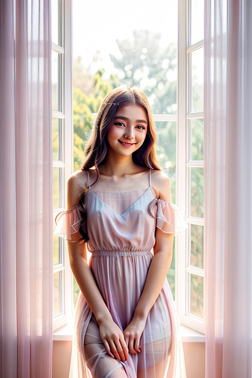
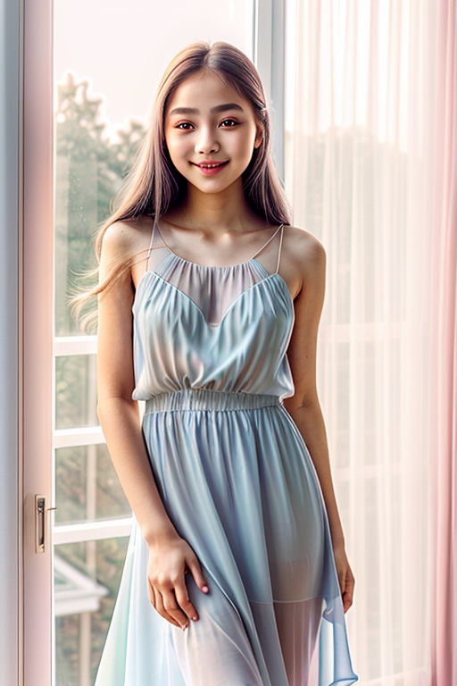
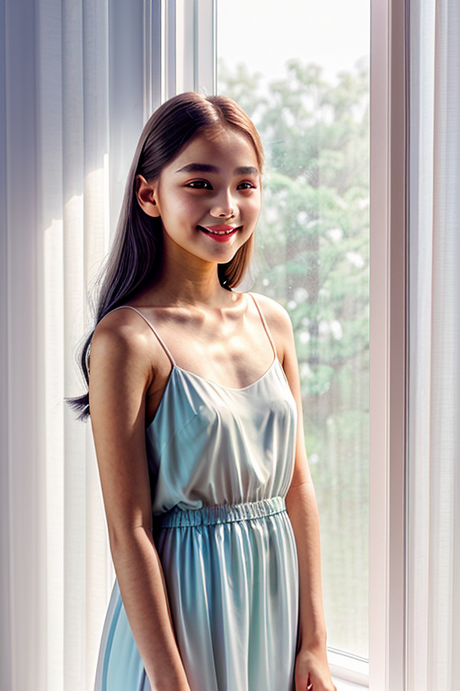
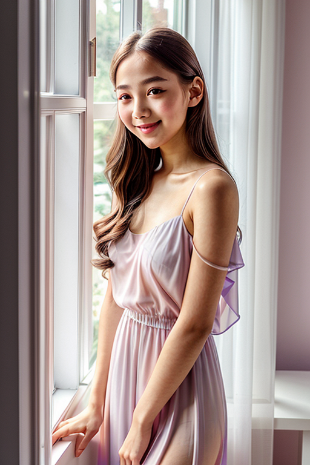
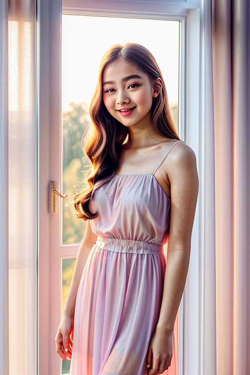
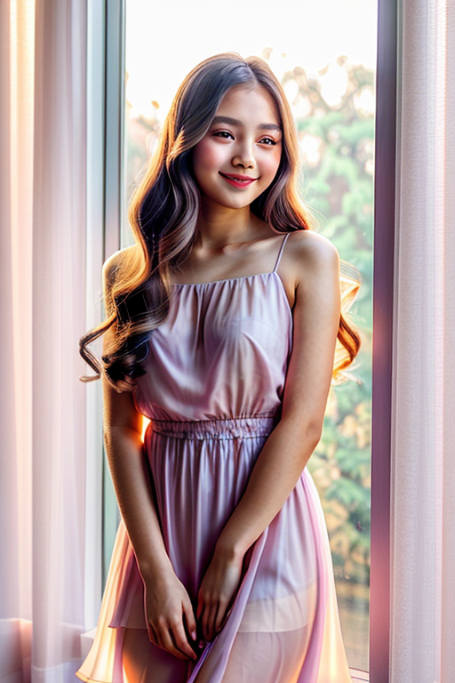
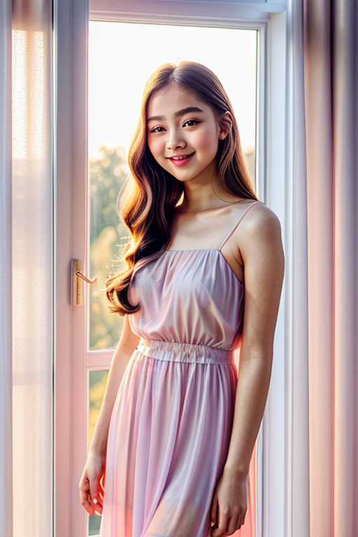
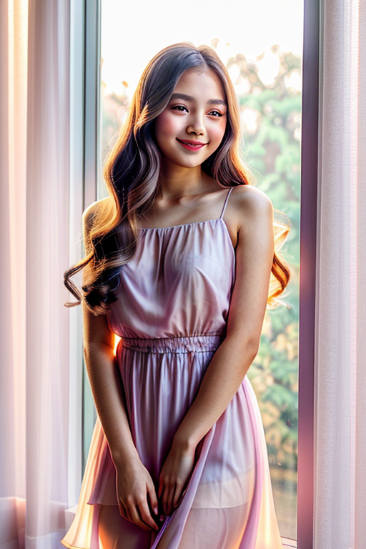

This set explores soft girl slow motion through modern aesthetics and calm tone under neon lights. Compositions use close-up with minimal set, keeping focus clear and tidy. Details like retro styling and balanced colors make browsing easy.
Browse soft images. Page 2 of curated soft-style portrait collection.
  


 





This page explores page2 with a practical focus on visual detail and browsing experience. The image aims to deliver a straightforward visual impression while keeping the file lightweight. A brief explanation clarifies the subject and lighting so visitors can quickly decide where to go next. Internal navigation leads to related items with comparable tone or composition. This reduces bounce and supports exploration within the same theme. If you are comparing alternatives, keep an eye on subtle differences in framing, contrast, and color balance. Internal navigation leads to related items with comparable tone or composition. This reduces bounce and supports exploration within the same theme. Bookmark the page if it’s useful; updates aim to improve clarity, speed, and overall structure over time.